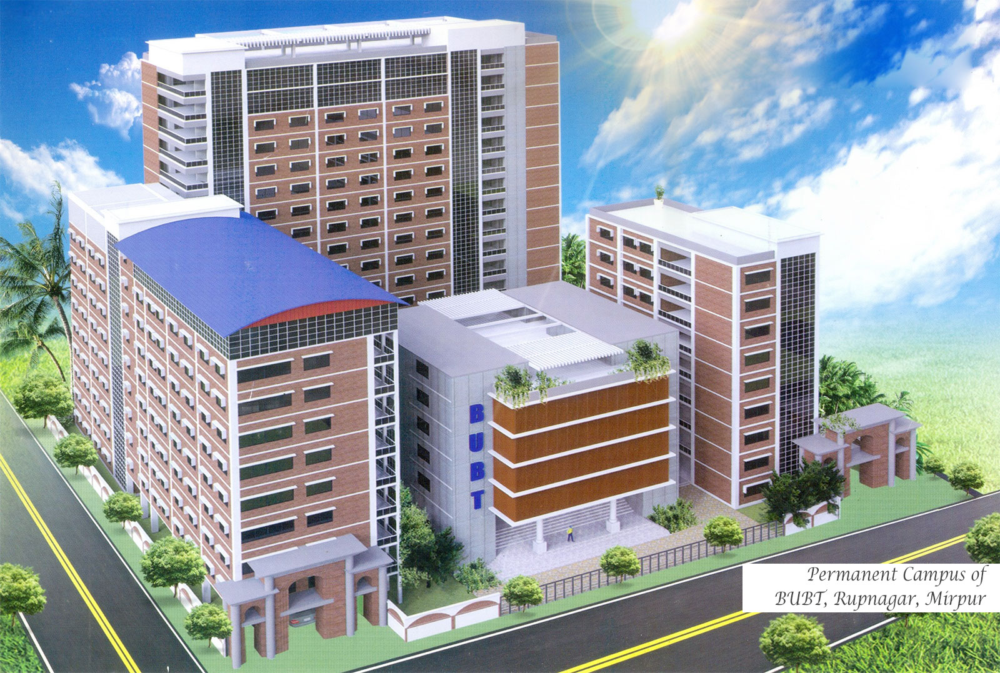

Bangladesh University of Business and Technology or BUBT is a private university in Bangladesh, located in Mirpur, Dhaka, Bangladesh. The university was established under the Private University Act 1992. BUBT is regulated by the Bangladesh University Grants Commission.
Bangladesh University of Business and Technology (BUBT) is a powerhouse of academic excellence that champions the freedom of learning. It has established a formidable reputation since its inception in 2003. The university has risen to one of the top ranking private universities in Bangladesh.
Bangladesh University of Business and Technology Library is a heart of the University. It helps always to the Students / Faculty members / Scholars to get more information. It takes care of its users to build up power of knowledge. As an academic library, it preserves Books, Journals, and Audio-visual materials on the course curriculum of the University.
BUBT has a spacious central playground at Beribadh, Mirpur, adjacent to its permanent campus. It includes a high-class cricket venue. Students can also play football, badminton and other outdoor sports in that ground.
BUBT have well spacious cafeteria with necessary facilities. Both the cafeteria have well organized sitting and food arrangements for the students. Besides, it has Teachers’ Lounge for the faculty members where they can have their snacks and lunch and read newspapers as well. Different kinds of snacks including fast food and traditional foods are available in BUBT cafeteria. Besides, breakfast and lunch are also available here.